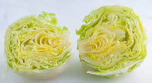

Lettuce Salad Recipe

Description
A salad you can make when you just give up
because you're tired and feeling lazy.
Ingredients
- Head of lettuce
- Cold water
Steps
- Gather the ingredients.
- Wash off the lettuce thoroughly with the water.
- Cut the lettuce head in half. Set the halves on a plate.
- Eat.
Home